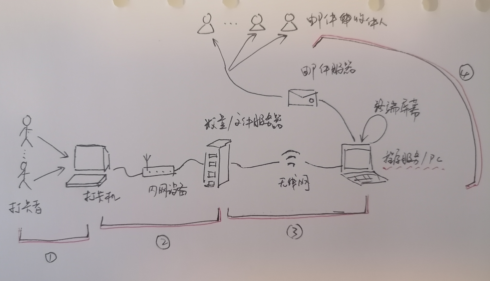
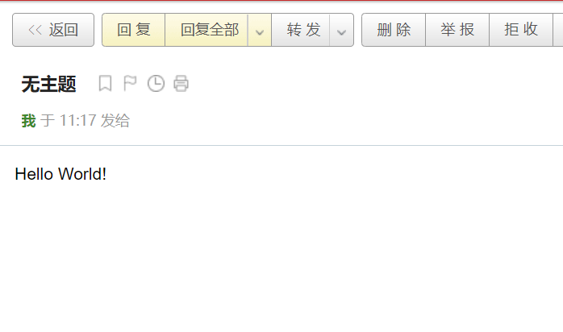

在上一篇文章中，我们将日志处理程序做了一定的自动化的处理，可以自动识别需要处理的日志文件，另外我们将程序做了函数化处理，将处理过程与业务理解相匹配。
今天我们再进一步改造，让程序可以将处理结果自动发送给相关人员，而不用我们自己手工处理。
这个改造不仅让我们节省了手工处理时间，更重要的是，它具备了部署服务器上，或者成为定时任务的能力，也就是说，加上这个改造之后，程序就能自理了。而让程序自理，是我们不断追求的目标。
现在开始吧！
输出无所不在
经过前面的了解，我们知道，任何程序都是由 输入、处理、输出 三部分组成的，同时我们也了解到了一些输出的方式，比如显示在终端屏幕上、存入文件中、给其他过程提供处理后的结果等等。
如果将输出定义为程序向外部发送或者暴露的信息的话，那么只要是能收到的程序的反馈都可以理解为输出。
我们的打卡日志处理程序，最终的输出是日志分析报告，这个输出的使用者，是需要这个分析报告的相关人员，那么日志处理程序、需要日志分析报告的人员，都是日志处理过程中的一个组成部分。
为了更清楚地理解这个过程，我们绘制一幅图：

可以看出这个过程，分为四个阶段，第一个是打卡阶段，也就是收集数据；
第二个是日志存储阶段，这是我们做的一个假设，即假设日志文件会被同步到文件服务器上；
第三个阶段就是数据处理，将日志文件处理成打卡报告；
第四个阶段是将报告发送给相关人员。
如果这么划分业务过程，我们就会发现，第一、第二两个阶段是输入，第三是处理，第四是输出，也就是说无论是一个简单的函数，还是复杂的业务流程，都可以划分为这三个部分。
为什么在这里再强调一遍呢？因为这样划分对于编程甚至其他事情来说都是很重要的，遇到问题首先需要将其拆解成这三个部分，然后就每个部分深入下去，整个过程就像俄罗斯套娃。
对于这三个部分来说，都会有千万个变化形式，和不同表现方式，比如输入，可以是通过键盘输入，也可以是通过文件输入，甚至通过光线、声音、图像等等，一切都可以是输入。
上古神器 —— 邮件
邮件想必大家都不陌生，她可是先于互联网大规模发展之前，就风生水起的神器，将世界各地的人连接了起来，虽然现在邮件的影响力不如以前，但在我们的日常生活中还是具有重要作用的。
我们用邮件作为通知方式很合适，首先在企业内部邮件几乎是标配，发信息，发通知几乎全靠她；另外，邮件比较容易配置，程序操作更方便；最后，邮件几乎免费，只要设置好配置，就能畅通无阻。
当然并不是能为所欲为，各大邮件服务商加大了违规力度，另外基于 AI 的反垃圾邮件机制已经很强大了;）
Python 提供了专门用于发邮件的库，可以像一个邮件客户端一样收发邮件。我们先看一段代码：
1 | import smtplib |
是否感觉有些复杂，其实仔细看看，没有循环也没有判断，只是顺序执行，说明一下就懂了。
这里插一句: 凡是有用的，质量好的模块内部代码都比较复杂，就像一个打开表壳的机械表一样，但不用怕，我们只需要利用它精确的输出就好，暂时不必掉入细节的坑里。
- 首先需要引入邮件发送库，
smtplib是发送客户端，剩下两个是主要是用于邮件内容格式化的 - 然后创建一个邮件内容对象，写法是固定的，主要是因为手工书写邮件内容很麻烦，因为内容不仅只包含邮件内容，可以用
print(msg)将内容打印出来观察一下 - 接着将邮件内容格式化成 html 格式，附加在邮件内容对上
- 创建邮件发送对象，注意这里的两个参数，分别是邮件发送服务器的网址，和端口号，服务器网址可以在邮件服务器设置中找到，不同邮件服务器的配置大同小异，端口的话一般都是加密发送，所以默认是
465 - 开启用户认证:
ehlo()，然后提供用户名密码登录:login - 最后提供发件人、收件人邮箱地址 和 邮件内容，发送邮件
- 注意
with它帮助我们免去了close的调用，如果不使用with记得完事后调用close或quit方法
笔者在 163 邮箱中测试通过，如果读者想要测试的话，可以注册一个网易邮箱试试，需要在邮件设置中开启 IMAP/SMTP服务
这是执行后收到的测试邮件：

通过分析代码我们会看到，发送邮件的代码中，除了几处需要特殊内容之外，整个过程大体都是固定的。
想到什么了吗？
如果是固定的，也就是我们下一次再遇到发送邮件的需求时，可以复制过去直接用。
Bingo！
有没有更好的复制办法呢？比如，代码好找，复制内容少，且不易出错。
当然有，那就是 —— 类
专业功能提供者 —— 类
头一次听 类 这个词会觉得很难理解，不知所云。放心吧，有这样感觉的人不在少数。
主要是，类 在英语中是 class 这个词，直接翻译过来就成了 类，实际上称之为 类型 可能更为合适，不是类型早已被占用，又加上 类 无处不在，所以就叫 类 了。
那么什么是 类 呢？
要理解其实很简单，想一下我们之前的编程练习，就能体会到 程序是对数据处理加工的过程，更进一步，程序是由 代码（程序处理逻辑）和 数据 组成的。
比如我们前面，解决日志文件最后处理的日志文件名问题时，将文件名写入了配置文件，那么配置文件就是数据，而读写配置文件的方法就是处理逻辑。
那么 类就是: 将处理逻辑和数据组合打包在一起的东西。
可能还不好理解，举个例子，一个维修工，来家里修电器，我们只需要将坏掉的电器给他，一会儿他给我们修理好的电器。
修理过程中不需要我们提供给他工具，也不需要我们在修理之后做清扫，他会自主完成所有任务，并清理垃圾，比如剥落的电线、使用的工具、换掉的器件等等。
类就像程序中的专业维修员，我们只需要给类提供必要的参数，程序就能被反复的使用，不用考虑其他东西，而且程序内部再复杂，处理输出，也不会对外部产生影响。
因此我们可以说类是程序中的专业功能提供者，相当于类承担了功能与数据处理的双重特性。
类的构造
如何构造一个类呢？看代码：
1 | class MyClass: |
这就完成了一个类的构造，我们来仔细看看：
- 通过关键字
class引导一个类的定义，并命名类为MyClass, 这一点和函数的定义类似 - 在内部，定义了一个方法
__init__，注意，必须这么命名，因为这个方法具有特殊的作用，即在类构建成对象（实例化过程，随后详述）的时候，对对象进行一定初始化的方法，比如这里，将一个名字初始化到对象中 sayHello是一个普通函数，用来打印一句问候语
需要特别注意 self 参数，无论是在初始化方法上，还是自定义的普通方法上，都是第一个参数，什么作用呢？这个 self 指的是类或者实例化之后的对象本身。
举个例子，就相当于专业维修工需要一个工具时，不用问别人要，直接从自己身上带的工具包里找就好了，这个 自己本身 ，就是 self。
因为在类中，当需要用到类本身时，需要有个地方能取到，所以 Python 中引入了 self 这个关键字，在其他面向对象语言中，也有类似的概念，比如 Java 中的 this。
再看一下 sayHello 方法，在 print 时，先用了 self.name，这就是从对象本身中获取 name 属性的方式。
既然能这样获取属性，那么能获取方法吗？答案是肯定的。
类的实例化
读者可能有种感觉，定义类和定义一个变量没太大区别。是的，在写法上没有太大区别，但是在含义上有巨大的差异。
定义变量后，就可以直接赋值或者操作了，也就是说，操作系统已经帮我们在内存中申请了存储空间了。
但是类不是的，定义好了类，相当于给程序新添加了一种变量类型，类似于 int、str 等一样，如果要使用，必须将其实例化成一个变量（对象），例如：
1 | hello = MyClass('Python Class') # 实例化一个对象 |
第一行就是实例化一个对象，注意这里的定义相当于把 MyClass 看作方法，而参数，就是 __init__ 初始化方法的参数，注意，不用附带 self 这个参数，Python 编译机制会为我们处理好的。
这样就定义了一个 hello 变量，或者说将 MyClass 实例化 成为一个对象了。
一般来说，一个类可以被实例化成无数个对象，除非为了实现一些特殊的功能，比如单例模式中，类可能只能被实例化一次。
实例化好的对象，就可以像一般变量一样用，注意，在调用 sayHello 方法时，我们并没有传递过任何参数，但可以打印出实例化时，赋予的参数值，这就是类中 self 的作用的体现。
邮件类
了解了 Python 中的类，我们再回到发送邮件时留的那个问题上，如何让复制代码变得更简单。
答案是，将其编写成邮件类。
读者可以会说了，为什么不编写成一个函数呢？
其实也不是不可以，不过如果是类的话，就能为我们附带一些处理工具，而不必每次都创建了，比如一些配置信息，可以初始化到类中，不必每次都写一个很长的参数。
当然了解了类之后，还可以做更多的事情，因为我们主要是要快速习得编程技能嘛。
分析前面的代码，发送邮件分为两部分，一部分是配置信息，另一部分是发送处理过程。
配置信息中，我们需要提供邮件服务器地址，端口，用户名，密码等，这部分可以在初始化时完成。
发送处理过程主要是邮件的内容，这部分每次可能不同，我们通过方法的参数提供。
好了，直接看一下实例代码：
1 | import smtplib |
不用被这么大篇幅吓到，仔细看，其实很简单的。
第一部分，是库的引用，不必多说。
第二部分是邮件类的定义，我们稍作分析。
仔细观察，不难发现，和我们的类定义示例代码没有本质区别，还是有 __init__ 和一个自定方法构成。
初始化方法中，将所有的配置都记录在类自身的 config 词典上了，值得注意的是初始化参数 **config。
参数前面加两个星号是什么意思呢？
我们在写函数参数时，对每个参数都做了命名，被称作为 形参，当提供参数时，我们可以在参数对应的位置上，提供实参值，但有些时候，我们需要向函数提供许多参数，而且可能不确定数量，就可以用加两个星号的 展开形式 提供参数。
调用起来很正常定义的方法一样，不过参数数量、名称可以随意（当然需要函数内部知道才行），最重要的是顺序也可以随意，所以在定义时并没有强调参数的顺序。
比如
MailSent(mail_from='from@mail.com', mail_to='to@mail.com')和MailSent(mail_to='to@mail.com'，mail_from='from@mail.com')效果是一样的。
另外在自定义方法 send_mail，对 to_mails 参数做了处理，如果需要给多个人发送的话，可以用逗号分隔，和在邮件客户端中的方式一样，所以需要对 to_mails 参数进行处理，用逗号拆分成数组。
替换通知方式
现在终于可以进入业务改造了，将通知方式替换成邮件通知形式。
上篇文章中，讨论的集成中的打印报告部分进行改造，传送门：《需求变了》。
为此我们编写一个通知函数: notify：
1 | mail = MailSent(mail_from= 'from@company.com', user='from', password='*****') |
与之前相比，多了邮件对象定义，本质上和 print 没有区别，而效果是将通过用邮件的方式发送出去。
假如我们需要给三个管理者发送邮件，他们的邮箱地址分别是 manager_a@company.com、manager_b@company.com、manager_c@company.com。
将其集成到业务主干代码中：
1 | configfile = 'config.txt' |
这样改造工作就完成了，除了对发送邮件类的编写需要费较大的精力，而中主要的部分，竟然只需要改一行代码。
这是因为我们前面对整体代码做了梳理，将其做了函数化转化，而让后期的改造工作变得更加丝滑。
需要注意的是，什么的示例代码中，使用的邮件地址都是编造的，在实际当中需要替换成实际的邮件地址，否则可能发送不成功。
总结
今天我们从日志报告输出的角度上，对日志处理程序做了改进，主要是要理解程序的三个组成部分：输入，输出 和 处理，每个部分都可以有不同的变体，但本质是不变的。
然后我们通过实现发送邮件，引入了 类 的概念，对于 类 来说，是面向对象编程的核心元素，理解和掌握需要大量的理论和实践练习，我们这里只是做了简单的感性说明，让读者知道有类存在，以及能做什么。在实践中，不会感到困惑，并增加一种代码封装的方法，关于更多面向对象的知识，还需要系统学习面向对象的编程的理论。
另外，我们通过实现最初的设想讨论了，有关程序改造的话题，在实际项目当中，改造或者变更是最让人痛苦的话题，往往会牵一发而动全身，以至于程序员们潜意识里就惧怕改动。
就像上篇文章中我们讨论的一样，程序无法改造或者改造困难，往往是人祸大于天灾，常常是不严守开发质量，对坏代码置之不理，而导致的必然结果。
因此我们在从开始的时候，就需要对代码的质量严加把控，提升灵活性，做组件和函数化改造。
话说，今天我们的实现中，也有些坏代码的味道，你发现了吗？
就是收件人邮件列表，我们用了死代码的方式实现的，虽然在短期可能不会有影响，但是长期来看，领导者可能更换，发送形式可能有变化（比如，不同的管理者需要的报告形式不不同等），都会对代码造成冲击，所以在上线以前，最好将这里调整过来。
怎么调整呢？提示一下 —— 配置文件 是个好方法。至于如何实现，需要读者自己想办法练习解决。
最后还一个地方值得修缮，就是通知邮件的格式，我们默认使用了打印在终端上的格式，但邮件中应该有称呼，有落款等个性化的信息，如何处理呢？读者可以开动脑筋思考一下。
好的今天的内容就到这里结束，笔者的水平有限，文章中难免出现各种错误和问题，恳请读者不吝批评、指正。十分感谢！
比心！